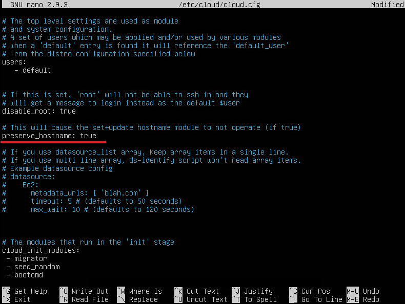
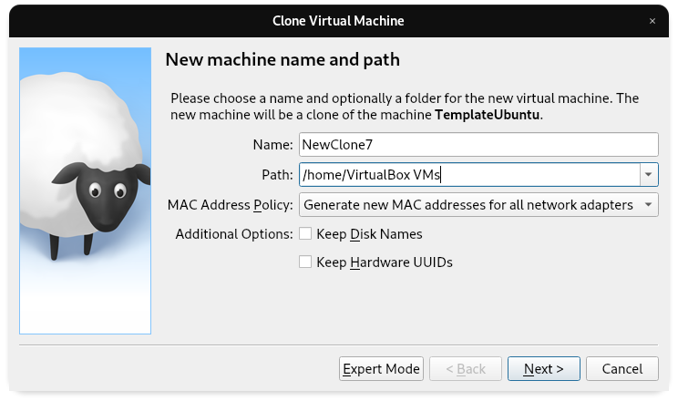

These tutorials will also be using Ubuntu Server ISOs. Like with the hypervisors, other distros can be used, but adapting these instructions for other distros is up to you. You can get the Ubuntu Server 20.04 ISO here. Another popular server distro is Fedora. You can get Fedora 35 here. It is recommended to keep your ISOs in their own folder wherever you want them. I keep mine on the desktop for quick access.
The proceeding tutorials will be using VirtualBox. Instructions will assume you are within that environment. The core of the instructions will work on other hypervizors or even on bare metal, but there may be differences in how it is set up. You can find the installer for VirtualBox here.
Below is a great video about virtual machines and how to get started with Virtual Box.
Upon installation of VirtualBox, we are going to set up our template machine.
You will want to create a new virtual machine that we will use as a template machine. Create a new virtual machine, and on the distro of your chioce, go though the installer while only installing the minimum neccessary packages. Once a virtual machine is set up, we are going to start cloning and adapting it for other uses.
On the template base machine, you will want to edit the /etc/cloud/cloud.cfg file and ensure that it has preserve_hostname: true instead of false. It should be on line 15. This step can be done on cloned machines, but to save future time, it is better to do so on this one.
sudo nano /etc/cloud/cloud.cfg

Now that we have our base template created, we are going to clone it for other uses. Simply right click on the base virtual machine and click Clone. Name the clone and set the path as desired. Ensure that the MAC Address Policy: is set to Generate new MAC address... as shown below.
Lastly, ensure that Clone Type is set to Full Clone. After that, you should have another virtual machine shown in Virtual Box Manger.
First, you will want to change the hostname. One possible way is to enter the following command, and replace the text of the current hostname to the desired one.
sudo nano /etc/hostname
Next, you may want to change the password. You can do so with the command bellow.
sudo passwd
It may also be neccessary to generate new SSH keys. This can be done with the following command.
sudo rm /etc/ssh/ssh_host_* && sudo dpkg-reconfigure openssh-server
Lastly, you should reboot and ensure that the hostname has indeed been changed.
reboot